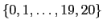

Brian Tanner ::brian@tannerpages.com
This document describes how to use the Java RL-Glue Codec, a software library that provides socket-compatibility with the RL-Glue Reinforcement Learning software library.
For general information and motivation about the RL-Glue1 project, please refer to the documentation provided with that project.
This codec will allow you to create agents, environments, and experiment programs in Java.
This software project is licensed under the Apache-2.02 license. We're not lawyers, but our intention is that this code should be used however it is useful. We'd appreciate to hear what you're using it for, and to get credit if appropriate.
This project has a home here:
http://glue.rl-community.org/Home/Extensions/java-codec
Compiling and running components with this codec requires Java 1.5 or higher. You can find out what version you have by doing the following at the command-line:
>$ java -version
Recompiling this codec requires the Apache Ant3 build system. You probably need JUnit and Subversion installed as well. We'll try to make those optional dependencies in the future. The good news is that you probably don't need to recompile the codec. Unlike C/C++, we can distribute a java JAR archive of the Java codec, and that is all you really need.
The tarball distribution can be found here:
http://code.google.com/p/rl-glue-ext/downloads/list
To check the code out of subversion:
svn checkout http://rl-glue-ext.googlecode.com/svn/trunk/projects/codecs/Java Java-Codec
Technically all you really need is the JAR archive of the codec:
svn export http://rl-glue-ext.googlecode.com/svn/trunk/projects/codecs/Java/products/JavaRLGlueCodec.jar
POSSIBLE CONTRIBUTION: IF someone wants to investigate the options for having a script ``install'' JavaRLGlueCodec.jar into a system classpath, we would like to have your help!
The pertinent file is:
examples/skeleton/SkeletonAgent.java
This agent does not learn anything and randomly chooses integer action 0 or 1.
You can compile and run the agent like:
>$ cd examples/skeleton >$ javac -classpath ~/JavaCodec/JavaRLGlueCodec.jar SkeletonAgent.java >$ java -classpath ~/JavaCodec/JavaRLGlueCodec.jar:. SkeletonAgent
You will see something like:
RL-Glue Java Agent Codec Version: 2.0 (Build:192:239M)
Connecting to 127.0.0.1 on port 4096...
This means that the SkeletonAgent is running, and trying to connect to the rl_glue executable server on the local machine through port 4096!
You can kill the process by pressing CTRL-C on your keyboard.
The Skeleton agent is very simple and well documented, so we won't spend any more time talking about it in these instructions. Please open it up and take a look.
POSSIBLE CONTRIBUTION: If you take a look at the agent and you think it's not easy to understand, think it could be better documented, or just that it should do some fancier things, let us know and we'll be happy to do it!
The pertinent file is:
examples/skeleton_environment/SkeletonEnvironment.java
This environment is episodic, with 21 states, labeled . States {0, 20} are terminal and return rewards of {-1, +1} respectively. The other states return reward of 0. There are two actions, {0, 1}. Action 0 decrements the state number, and action 1 increments it. The environment starts in state 10.
You can compile and run the environment like:
>$ cd examples/skeleton >$ javac -classpath ~/JavaCodec/JavaRLGlueCodec.jar SkeletonEnvironment.java >$ java -classpath ~/JavaCodec/JavaRLGlueCodec.jar:. SkeletonEnvironment
You will see something like:
RL-Glue Java Environment Codec Version: 2.0 (Build:192:239M)
Connecting to 127.0.0.1 on port 4096...
This means that the SkeletonEnvironment is running, and trying to connect to the rl_glue executable server on the local machine through port 4096!
You can kill the process by pressing CTRL-C on your keyboard.
The Skeleton environment is very simple and well documented, so we won't spend any more time talking about it in these instructions. Please open it up and take a look.
POSSIBLE CONTRIBUTION: If you take a look at the environment and you think it's not easy to understand, think it could be better documented, or just that it should do some fancier things, let us know and we'll be happy to do it!
The pertinent files are:
examples/skeleton/SkeletonExperiment.java
This experiment runs RL_Episode a few times, sends some messages to the agent and environment, and then steps through one episode using RL_step.
>$ cd examples/skeleton >$ javac -classpath ~/JavaCodec/JavaRLGlueCodec.jar SkeletonExperiment.java >$ java -classpath ~/JavaCodec/JavaRLGlueCodec.jar:. SkeletonExperiment
You will see something like:
Experiment starting up!
RL-Glue Java Experiment Codec Version: 2.0 (Build:192:239M)
Connecting to 127.0.0.1 on port 4096...
This means that the SkeletonExperiment is running, and trying to connect to the rl_glue executable server on the local machine through port 4096!
You can kill the process by pressing CTRL-C on your keyboard.
The Skeleton experiment is very simple and well documented, so we won't spend any more time talking about it in these instructions. Please open it up and take a look.
POSSIBLE CONTRIBUTION: If you take a look at the experiment and you think it's not easy to understand, think it could be better documented, or just that it should do some fancier things, let us know and we'll be happy to do it!
>$ cd examples/skeleton >$ rl_glue & >$ java -classpath ~/JavaCodec/JavaRLGlueCodec.jar:. SkeletonAgent & >$ java -classpath ~/JavaCodec/JavaRLGlueCodec.jar:. SkeletonEnvironment & >$ java -classpath ~/JavaCodec/JavaRLGlueCodec.jar:. SkeletonExperiment
If RL-Glue is not installed in the default location, you'll have to start the rl_glue executable server using it's full path (unless it's in your PATH environment variable):
>$ /path/to/rl-glue/bin/rl_glue &
You should see output like the following if it worked:
>$ rl_glue &
RL-Glue Version 3.0-beta-1, Build 848:856
RL-Glue is listening for connections on port=4096
>$ java -classpath ~/JavaCodec/JavaRLGlueCodec.jar:. SkeletonAgent &
RL-Glue Java Agent Codec Version: 2.0 (Build:192:239M)
Connecting to 127.0.0.1 on port 4096...
Agent Codec Connected
RL-Glue :: Agent connected.
>$ java -classpath ~/JavaCodec/JavaRLGlueCodec.jar:. SkeletonEnvironment &
RL-Glue Java Environment Codec Version: 2.0 (Build:192:239M)
Connecting to 127.0.0.1 on port 4096...
Environment Codec Connected
RL-Glue :: Environment connected.
>$ java -classpath ~/JavaCodec/JavaRLGlueCodec.jar:. SkeletonExperiment
Experiment starting up!
RL-Glue Java Experiment Codec Version: 2.0 (Build:192:239M)
Connecting to 127.0.0.1 on port 4096...
Experiment Codec Connected
RL-Glue :: Experiment connected.
Skeleton agent parsed the task spec.
Observation have 1 integer dimensions
Actions have 1 integer dimensions
Observation (state) range is: 0 to 20
Action range is: 0 to 1
Reward range is: -1.0 to 1.0
RL_init called, the environment sent task spec:
VERSION RL-Glue-3.0 PROBLEMTYPE episodic DISCOUNTFACTOR 1.0
OBSERVATIONS INTS (1 0 20) ACTIONS INTS (1 0 1) REWARDS (1 -1.0 1.0) EXTRA
----------Sending some sample messages----------
Agent responded to "what is your name?" with: my name is skeleton_agent, Java edition!
Agent responded to "If at first you don't succeed; call it version 1.0" with: I don't know how to respond to your message
Environment responded to "what is your name?" with: my name is skeleton_environment, Java edition!
Environment responded to "If at first you don't succeed; call it version 1.0" with: I don't know how to respond to your message
----------Running a few episodes----------
Episode 0 10 steps -1.0 total reward 1 natural end
Episode 1 10 steps -1.0 total reward 1 natural end
Episode 2 10 steps -1.0 total reward 1 natural end
Episode 3 10 steps -1.0 total reward 1 natural end
Episode 4 10 steps -1.0 total reward 1 natural end
Episode 5 1 steps 0.0 total reward 0 natural end
Episode 6 10 steps -1.0 total reward 1 natural end
----------Stepping through an episode----------
First observation and action were: 10 and: 0
----------Summary----------
It ran for 10 steps, total reward was: -1.0
As of writing, the Java codec is the only codec that has a valid task spec parser implementation. The specific class is:
org.rlcommunity.rlglue.codec.taskspec.TaskSpecVRLGLUE3
TaskSpecVRLGlue3 should be used in environments to create task specification strings in env_init. The Skeleton Environment provides an example of creating a task spec in this way. There are several advanced examples of this in the RL-Library.
TaskSpecVRLGlue3 can also be used in the agent to get the ranges of the actions, observations, and rewards, etc. The Skeleton Agent provides an example of how to do this.
In these cases, you can tell your Java agent, environment, or experiment program to connect on a custom port and/or to a custom host using the environment variables RLGLUE_PORT and RLGLUE_HOST.
For example, try the following code:
> $ RLGLUE_PORT=1025 RLGLUE_HOST=yahoo.ca java -classpath \ ~/JavaCodec/JavaRLGlueCodec.jar:. SkeletonAgentSkeletonAgent
That command could give output like:
RL-Glue Java Agent Codec Version: 2.0 (Build:390M) Connecting to yahoo.ca on port 1025...
This works for agents, environments, and experiments. In practice, yahoo.ca probably isn't running an RL-Glue server.
You can specify the port, the host, neither, or both. Ports must be numbers, hosts can be hostnames or ip addresses. Default port value is 4096 and host is 127.0.0.1.
If you don't like typing these variables every time, you can export them so that the value will be set for future calls in the same session:
> $ export RLGLUE_PORT=1025 > $ export RLGLUE_HOST=mydomain.com
Remember, on most *nix systems, you need superuser privileges to listen on ports lower than 1024, so you probably want to pick one higher than that.
Instead of re-creating information that is readily available in the JavaDocs, we will give pointers were appropriate.
All of the types are listed in the org.rlcommunity.rlglue.codec.types package.
Since things were changing, we took an opportunity to fix some of our long-term gripes with the Java codec. The name of the JAR file has changed from RL-Glue.jar to JavaRLGlueCodec.jar.
The JAR file is now distributed in:
rl-glue-ext/projects/codecs/java/products/JavaRLGlueCodec.jar
In the previous incarnation of the Java codec, the classes were in a very shallow heirarchy: rlglue.RLGlue, RLGlue.types, etc. For the updated release, we've moved to a richer package description that
is more in line with other Java projects in the Reinforcement Learning community. The new package hierarchy is:
org.rlcommunity.rlglue
We've also moved a few of the class/interfaces around. The most notable change is that instead of Agent and Environment interfaces, we now have AgentInterface and EnvironmentInterface. Also, instead of these interfaces being in their own package, they are now in: org.rlcommunity.rlglue.codec.
Updating existing code might seem like a lot of work, but it's easier than it seems. The main changes from the user end are: 1) Using the right jar (JavaRLGlueCodec.jar instead of RL-Glue.jar) (Not necessary if you are using RL-Viz)
2) Change classes that implement Agent and Environment to AgentInterface and EnvironmentInterface
3) Change package imports. Find and replace:
rlglue.RLGlue ==> org.rlcommunity.rlglue.codec.RLGlue rlglue.types. ==> org.rlcommunity.rlglue.codec.types. rlglue.agent.Agent ==> org.rlcommunity.rlglue.codec.AgentInterface rlglue.environment.Environment ==> org.rlcommunity.rlglue.codec.EnvironmentInterface
4) org.rlcommunity.rlglue.codec.types.Reward_observation has been renamed to:
org.rlcommunity.rlglue.codec.types.Reward_observation_terminal
5) Random_seed_key and State_key have been removed
Those few things should cover most of it. If someone makes a very strong case, we can probably create a codec that is completely compatible with the old naming conventions. However, I assure you that I uploaded several tens of thousands of lines of code for the RL-Viz, RL-Library, and BT-AgentLib projects in only about 30 minutes total.
POSSIBLE CONTRIBUTION: If we've missed anything, or there is an easier way, please let us know!
For all these examples, lets pretend that the JavaRLGlue.jar path and JAR are in an environment variable called CODECJAR. We could actually do that (with a bash shell) like:
export CODECJAR=/path/to/JavaRLGlueCodec.jar
The first (original) method was to call the main() method of the AgentLoader/EnvironmentLoader class, passing it the name of the Agent/Env class you wanted to load. Hopefully you remembered to put it in your classpath. This approach inevitably lead to lots of typing to load an agent, as frustrating run-time failures when paths weren't set right. Here is an example of how that looks:
java -classpath $CODECJAR:/to/classes org.rlcommunity.rlglue.codec.util.AgentLoader myAgent
The second method was to bypass the AgentLoader and go through RLGlueCore, which contains the default main method in the JAR. This method is a bit better, but it is still long and depends on run-time checking in a way that we (I?) really didn't like. Here is how it looks:
java -classpath /to/Agent/classes -jar $CODECJAR myAgent
The new and improved method is to put a main method inside your agent/environment that calls the applicable loader so that the agent/env can load itself. So, in your agent (for example) you'd have code like:
import org.rlcommunity.rlglue.codec.util.AgentLoader;
/* rest of agent here */
//This would be inside MyAgent.java
public static void main(String[] args){
AgentLoader theLoader=new AgentLoader(new MyAgent());
theLoader.run();
}
So, for the price of that tiny bit of code inside your agent, you can now run the agent class directly:
java -classpath $CODECJAR:/to/Agent/classes myAgent
We feel that this is a useful step forward, and will be encouraging this approach.
The online FAQ may be more current than this document, which may have been distributed some time ago.
We're happy to answer any questions about RL-Glue. Of course, try to search through previous messages first in case your question has been answered before.
Brian Tanner has since grabbed the torch and has continued to develop the codec.
Revision Number: $Rev: 312 $ Last Updated By: $Author: brian@tannerpages.com $ Last Updated : $Date: 2008-10-05 22:27:11 -0600 (Sun, 05 Oct 2008) $ $URL: https://rl-glue-ext.googlecode.com/svn/trunk/projects/codecs/Java/docs/JavaCodec.tex $
This document was generated using the LaTeX2HTML translator Version 2002-2-1 (1.71)
Copyright © 1993, 1994, 1995, 1996,
Nikos Drakos,
Computer Based Learning Unit, University of Leeds.
Copyright © 1997, 1998, 1999,
Ross Moore,
Mathematics Department, Macquarie University, Sydney.
The command line arguments were:
latex2html JavaCodec.tex -split 0 -dir html -mkdir -title 'RL-Glue Java Codec' -local_icons -math
The translation was initiated by Brian Tanner on 2008-12-03